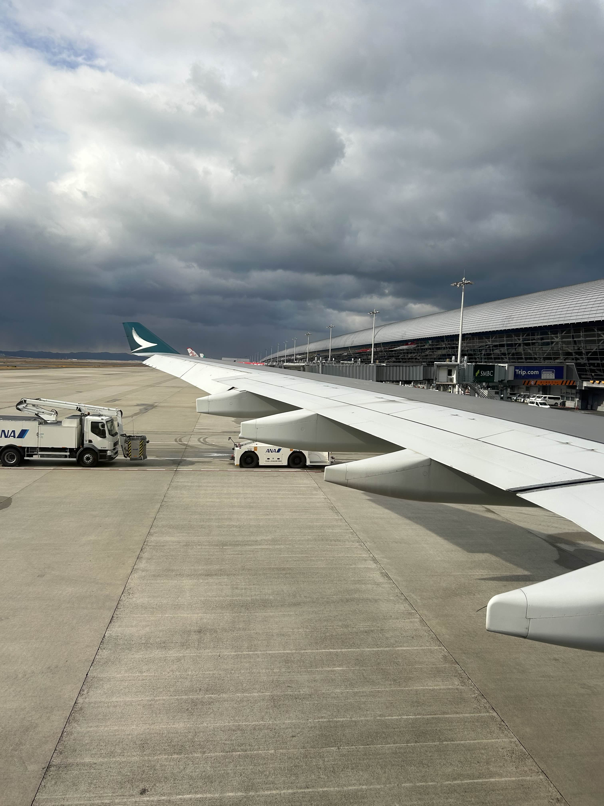
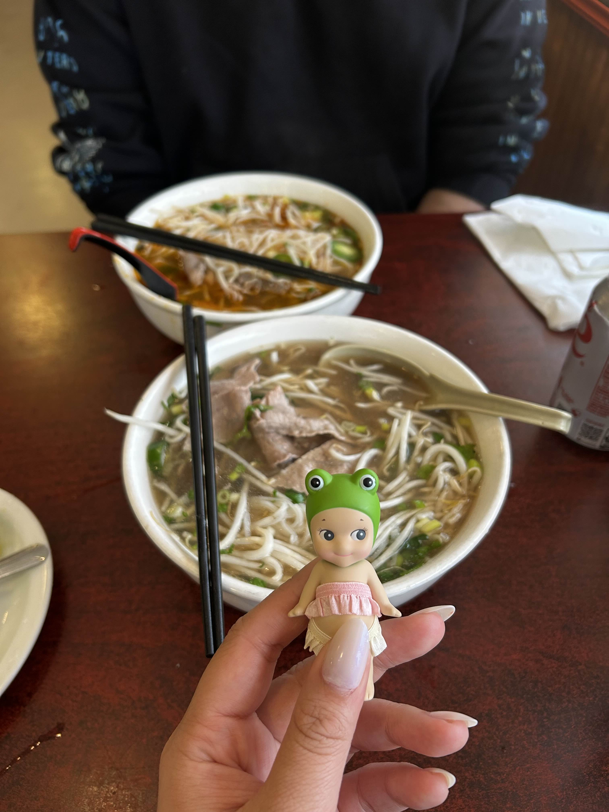
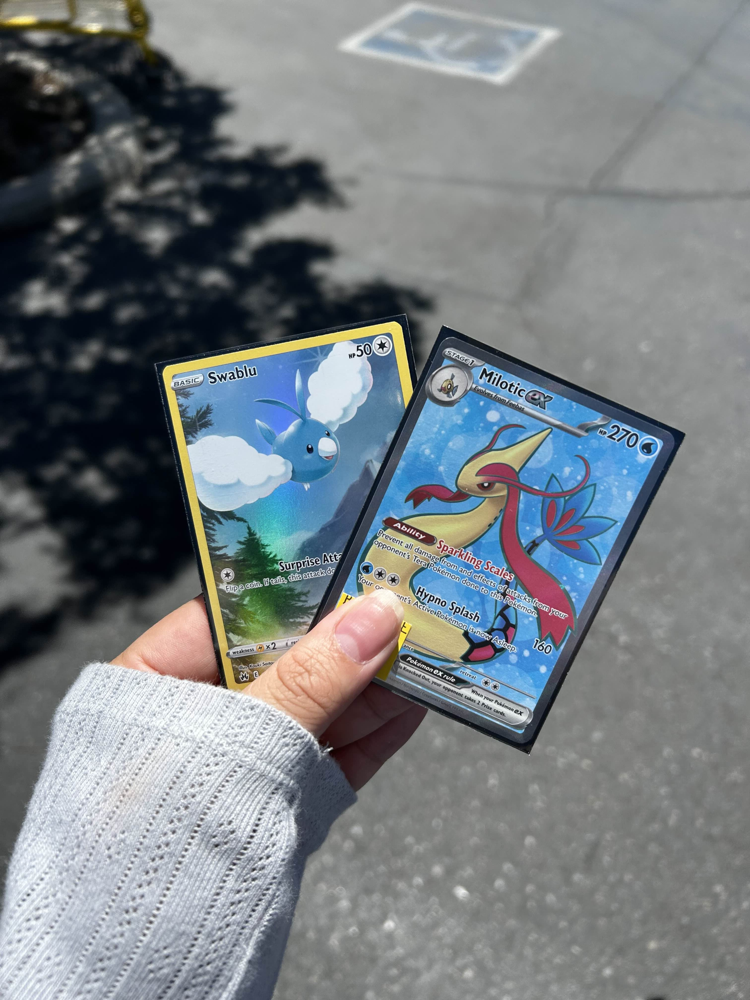
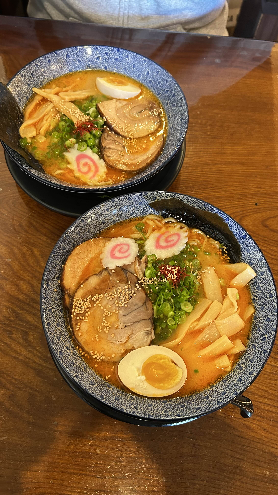
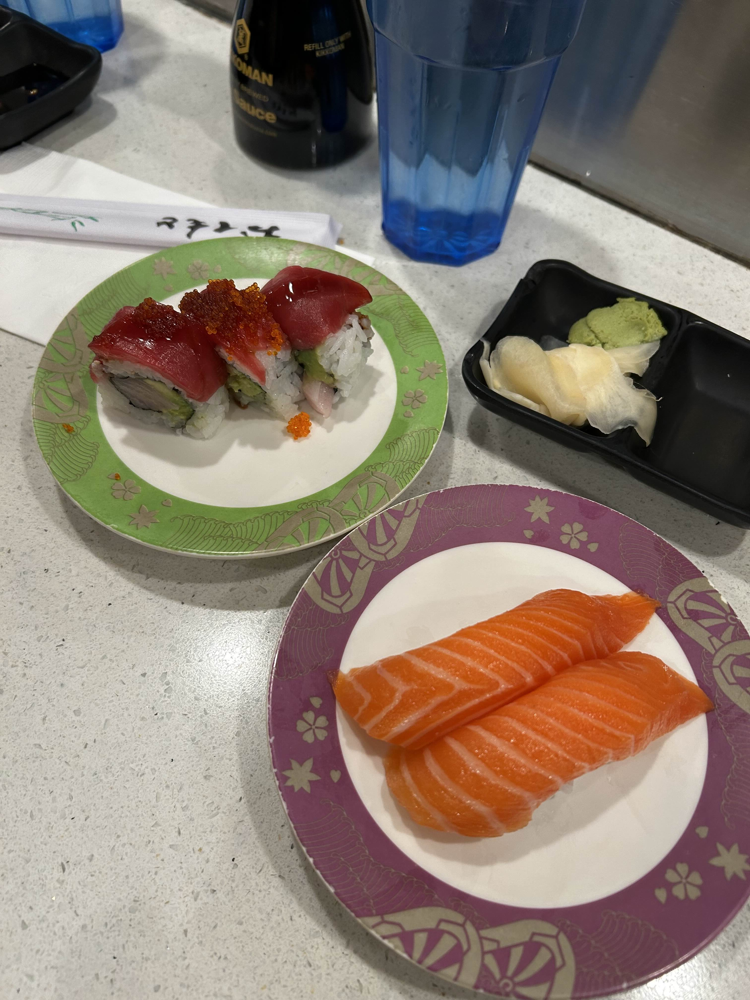
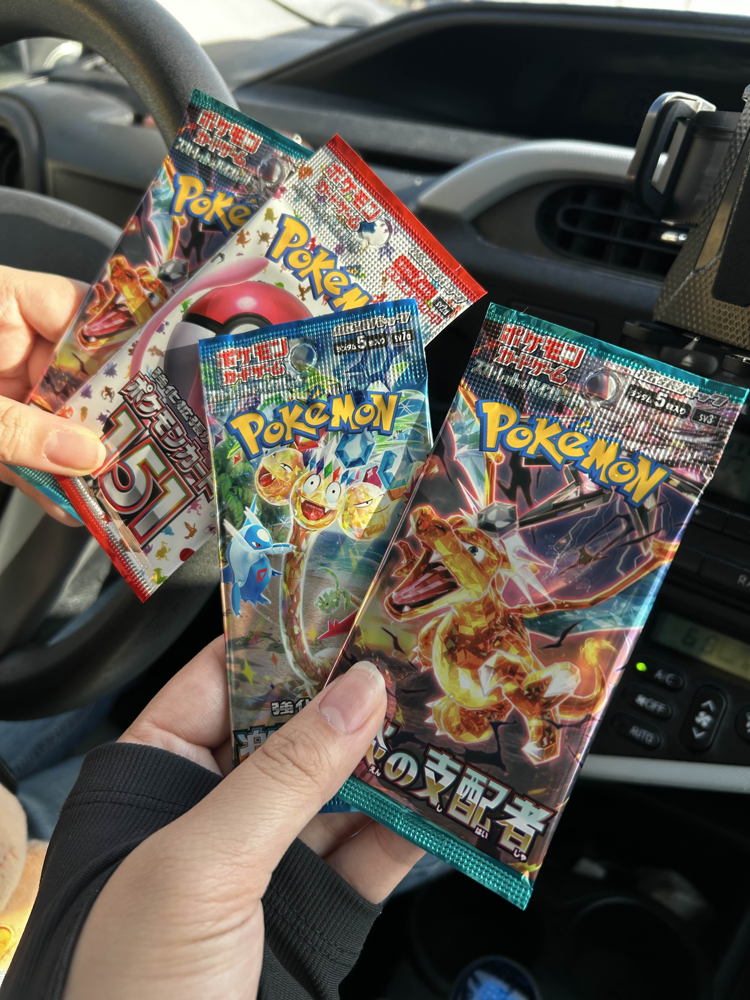
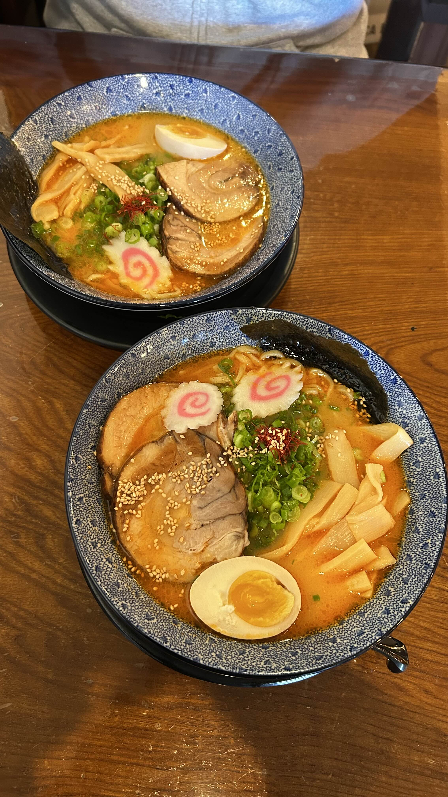
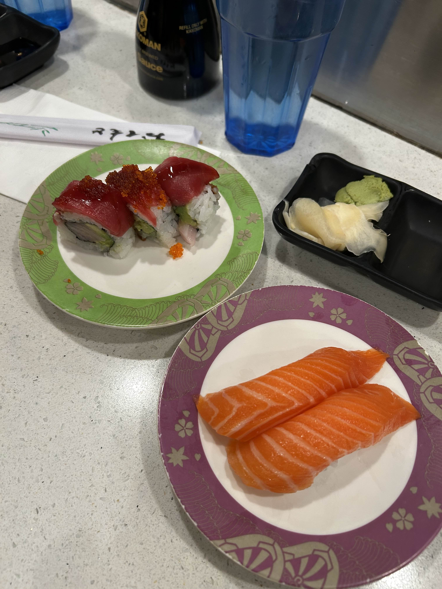
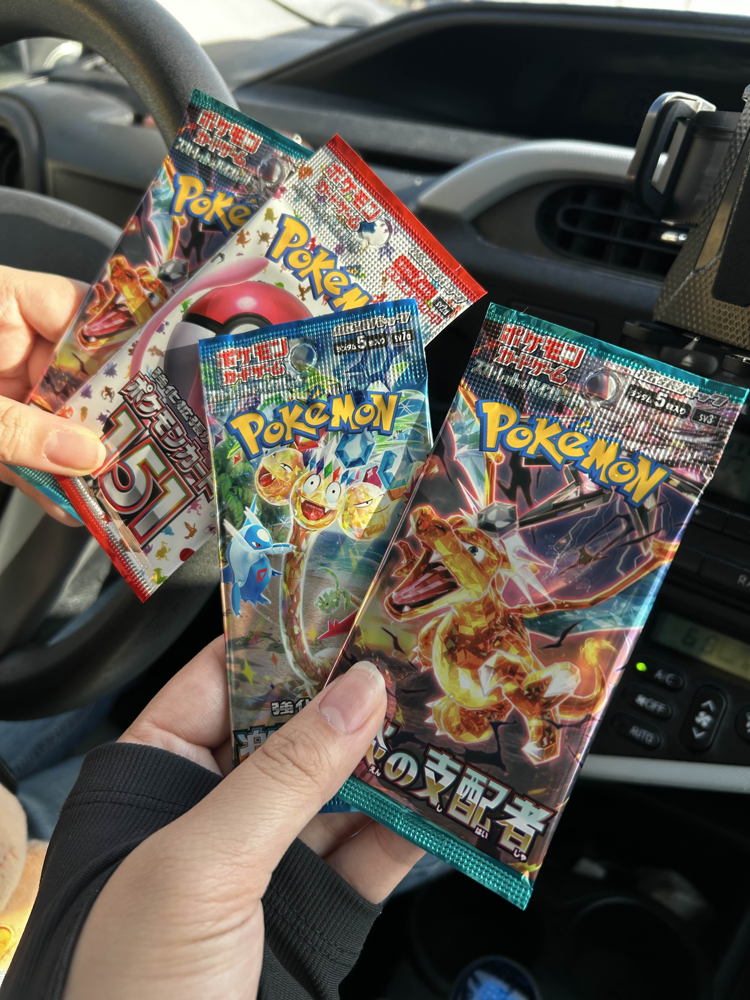

I don't know, but I'll learn.
Experience
IoT4Ag Engineering Undergraduate Research AssistantSep 2023 - Aug 2024
- Trained a classifier using TensorFlow for infrared camera images and temperature data to automatically stop a vertical moving actuator attached to the field robot.
- Collected and analyzed infrared camera images and temperature data using Python and ROS2 for further comparison in leaf moisture and irrigation studies.
- Worked with LoRa (long-range radio) Arduinos to send data over long distances in the field.
- Implemented code in Python to interface LoRa using ROS2 Humble and Arduino Sketches.
- Aided in testing navigation stacks using satellite GPS and Husky UGV from Clearpath Robotics.
- Engaged in recurring update meetings with UC Merced PhD Students and UC Merced Robotics Professor.
Oct 2022 - Dec 2022
- Organized and scheduled test subjects for the in-person lab study.
- Cooperated and learned closely from graduate students and professors throughout the lab.
- Set up the lab study atmosphere and aided in conducting various test cases.
- Paper published in CHI '24: Proceedings of the CHI Conference on Human Factors in Computing Systems.
Dec 2020 - Jan 2022
- Gathered and organized program research and education outputs to produce detailed semi-annual progress reports to NASA.
- Revised material to update the MACES website and Center Director’s lab website.
- Updated the MACES website and Center Director’s lab website using HTML and Squarespace.
- Organized and recorded detailed notes for financial meetings and monthly staff meetings.
Jul 2020 - Jul 2020
- Led and developed a highly interactive application using JavaScript and Glitch visualizing and creating music using oscillating shapes and colors.
- Engaged in community leadership discussions with software developer leaders to discuss updates on the project and brainstorm new ideas.
Education
University of California, MercedBachelor of Science in Computer Science and Engineering
Aug 2020 - May 2024
- Achieved Chancellor and Dean’s Honor list
- Activities and societies: Hmong Student Association - Historian
- Relevant Classes - Computer Architecture, Operating Systems, Digital Image Processing, Introduction to Robotics, Human Computer Interaction, Algorithm Design and Analysis, Computer Organization and Assembly Language, Data Structures
Aug 2016 - June 2020
- Activities and societies: Girls Who Code, Robotic Eagles, Volleyball, American Service Club, and Youth Outreach Worker
Hobbies
I enjoy collecting trinkets, gaming, photography, traveling, and food!



 





I am also an affiliate on Twitch :D